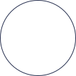
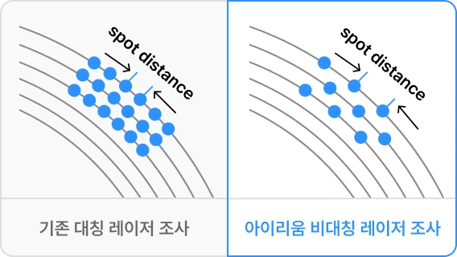
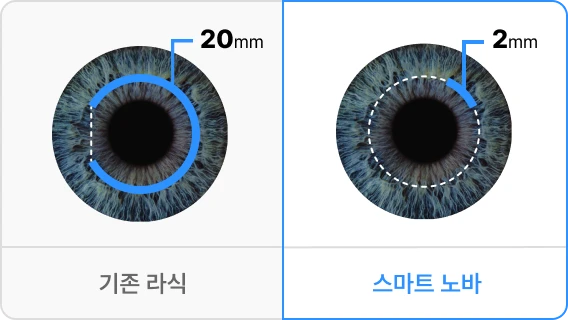
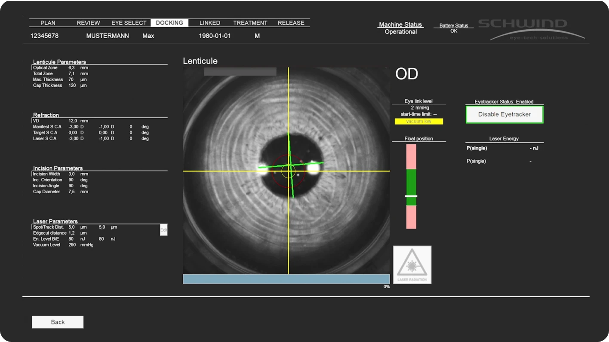

아이리움은 정밀검사 결과를 바탕으로 수술 적합성을 먼저 판단하고, CenTrax®의 자동 중심 정렬과 회전 보정 기술을 활용해 개인별 눈에 맞는 1:1 시력교정을 설계합니다.
스마트 노바의 핵심, CenTrax®
CenTrax®는 수술 중 중심 정렬과 안구 회전 보정을 자동으로 반영하는
Active Intelligent Centration 기술의 정밀 보정 시스템입니다.
-

실시간 자동 중심 정렬
Active Intelligent Centration
도킹부터 레이저 조사까지 동공의 중심 변화를 인식하고, 중심 정렬을 자동으로 보정합니다.
-
안구 회전 자동 보정
Static Cyclotorsion Compensation
자세 변화나 수술 중 미세하게 발생할 수 있는 안구 회전 오차를 보정해, 난시축 오차를 줄이는 데 도움을 줍니다.
-
도킹 오차 보정
Docking Error Compensation
도킹 과정에서 발생할 수 있는 중심 오차를 자동으로 보정해, 수동 정렬 의존도를 낮추고 안정적인 수술을 돕습니다.
-
진단 장비 데이터 연동
Diagnostic Import
MS-39, PERAMIS 등 정밀 진단 장비의 데이터를 활용해 수술 전 설계와 수술 중 정렬의 일관성을 높입니다.
스마트 노바,
기존 수술과 무엇이 다른가?
SmartSight NOVA®는 기존 스마트사이트(SmartSight) 수술의 장점에
CenTrax® 자동 보정 기술을 더해 중심 정렬, 회전 보정, 도킹 오차 보정까지 정밀하게 반영합니다.
왼쪽으로 스와이프
<-
-
구분중심 맞춤(Centration)난시 교정교정 정밀도시력 결과적응 도수 범위대상 환자군절삭 설계진단 데이터 연동
-
Classic SmartSight집도의 수동 조정중등도 수준까지 교정 가능매우 우수안정적이고 안전-1 ~ -10 디옵터일반적인 시력교정 대상일반 렌티큘 추출기본 진단 기반
-
SMART Nova with CenTrax®
차세대 시력교정술
실시간, 소프트웨어 자동 보정초정밀(ultra-fine) 난시 교정까지 가능탁월, 최대 0.05D 단위까지 가능대비감 향상, 산란광 감소 등 더 선명한 시야-1 ~ -10 디옵터정밀 난시 교정·고정밀 시력교정 목표 대상Transition Zone · Tissue Saving · Asymmetric Spot Spacing 반영MS-39 · PERAMIS Diagnostic Import
- 상피 회복 기간과 수술 결과는 개인의 각막 상태, 근시·난시 정도, 눈물막 상태, 회복 양상에 따라 차이가 있을 수 있습니다.
- 수술 방식은 정밀검사 후 의료진 상담을 통해 결정됩니다.
아이리움의 설계 노하우
Precision Planning Know-how by EYEREUM
-
수술 중 흔들릴 수 있는 중심까지 자동 보정, CenTrax®
CenTrax®는 도킹 과정에서 발생할 수 있는 동공 중심 변화와 미세한 움직임을 인식하고, 도킹 후 남은 오차까지 보정해 더 안정적인 중심 정렬을 돕습니다.

-
에너지 분포 미세 조율, 매끈한 각막 설계
Fine-Tuning of Energy Distribution Asymmetric Spot Spacing · Low Dose로우에너지 레이저 펄스와 에너지 분포를 정밀하게 조정해 각막 절단면을 균일하고 매끄럽게 형성합니다. 스마트 노바는 Asymmetric Spot Spacing과 low dose 설계를 통해 시력의 선명도와 회복 속도를 함께 고려합니다.

-
각막 플랩 없는 부드러운 교정
Gentle Extraction Experience기존 라식처럼 각막 플랩(flap)을 만들지 않고, 각막 내부에 미세 렌티큘을 형성한 뒤 작은 절개로 제거하는 플랩리스 수술입니다. 각막 구조 보존을 고려해 외부 충격, 건조감, 회복 부담을 줄이는 데 도움을 줍니다.

-
0.05D 단위까지 반영하는 미세 맞춤 설계
기존 0.25 단위에서 0.05D 단위의 세밀한 교정이 가능해 미세한 시력 불균형과 잔여 난시를 더 정밀하게 반영할 수 있습니다. 아이리움은 정밀검사와 CenTrax® 보정 기술을 바탕으로 개인별 눈에 맞는 고정밀 시력교정을 설계합니다.

스마트 노바,
이런 분께 추천합니다.
-
수술 후 빠른 시력 회복을 원하는 분
-
정밀한 난시 교정이
중요한 분 -
플랩 없이 라식보다 외부 충격에 강한 시력교정술을 원하는 분
-
미세한 도수 차이까지 세심한 교정을 원하는 분
-
더 선명하고 정교한 결과를 원하는 분
스마트 노바 FAQ
스마트 노바 수술 전, 가장 많이 묻는 질문
-
Q
스마트노바는 일반 스마일과 무엇이 다른가요?
수술 방식은 정밀검사 결과를 바탕으로 결정됩니다. 근시·난시 정도, 각막 두께와 형태, 고위수차, 야간 빛번짐 우려, 회복 목표 등을 종합해 기본 투데이라섹, 커스텀아이즈 투데이라섹, 커스텀아이즈 Plus 중 적합한 방식을 안내합니다.
-
Q
모든 사람이 스마트 노바가 가능한가요?
수술 방식은 정밀검사 결과를 바탕으로 결정됩니다. 근시·난시 정도, 각막 두께와 형태, 고위수차, 야간 빛번짐 우려, 회복 목표 등을 종합해 기본 투데이라섹, 커스텀아이즈 투데이라섹, 커스텀아이즈 Plus 중 적합한 방식을 안내합니다.
-
Q
수술 다음날 출근이나 일상생활이 가능한가요?
수술 방식은 정밀검사 결과를 바탕으로 결정됩니다. 근시·난시 정도, 각막 두께와 형태, 고위수차, 야간 빛번짐 우려, 회복 목표 등을 종합해 기본 투데이라섹, 커스텀아이즈 투데이라섹, 커스텀아이즈 Plus 중 적합한 방식을 안내합니다.